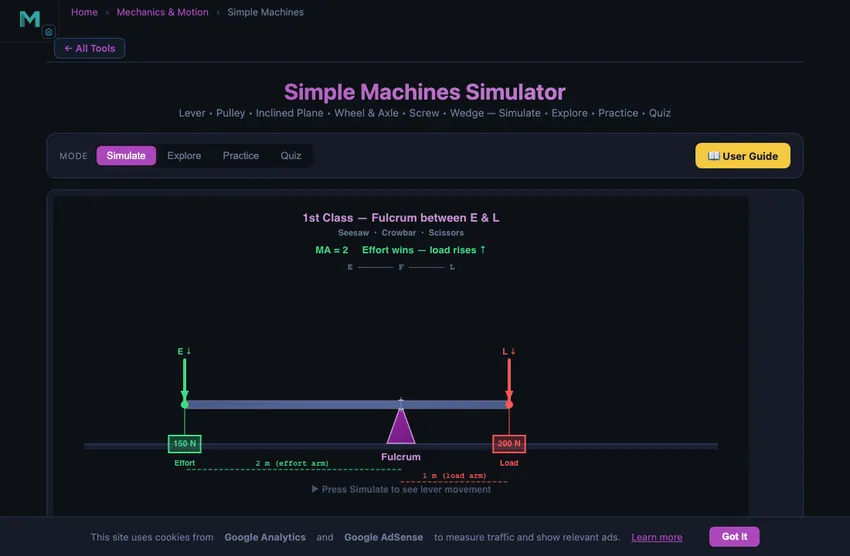
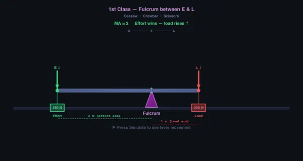

Simple Machines Simulator
Lever • Pulley • Inclined Plane • Wheel & Axle • Screw • Wedge — Simulate • Explore • Practice • Quiz
1 Overview
This free simple machines mechanical advantage simulator lets you explore all six classical simple machines: lever, pulley, inclined plane, wheel and axle, screw, and wedge. For each machine, the interactive animation shows how effort and load forces relate, while real-time readout cards display Mechanical Advantage (MA), Velocity Ratio (VR), and Efficiency.
Whether you are learning about first-class levers, block-and-tackle pulley systems, or the relationship between effort distance and load distance, this tool provides instant visual feedback with animated force vectors, accurate scale drawings, and precise numerical results — all without downloads or plugins.
2 Setting the Scene
The simulator opens in Simulate mode with the Lever machine selected. The canvas shows an animated lever with effort and load arrows, and compact chips in its top-left corner read out MA, VR and efficiency live — plus a self-locking state for the screw, wedge and inclined plane. Fuller numbers, including the work in / work out / friction-loss breakdown, sit in the cards below.
Use the Machine pills to switch between the six machine types. Each machine has its own set of sliders and parameters. The four mode pills (Simulate, Explore, Practice, Quiz) at the top let you switch between hands-on simulation, concept study, random problem practice, and timed quizzes.
Presets — Wheelbarrow, Fishing Rod, Crane Pulley, Car Jack, Loading Ramp, Door Wedge and Screwdriver — configure realistic scenarios with a single click.
On the Lever and Inclined Plane the canvas is draggable: the cursor changes over it, and dragging left/right sets the effort arm or up/down sets the ramp angle. A drag is one undo step, and a plain click never changes anything.
3 Running the Demo
Select a machine type and adjust its parameters using the sliders. Press Simulate to watch the animated operation, and Reset to return to the starting position.
Lever: Choose 1st, 2nd, or 3rd class. Adjust effort, load, effort arm, and load arm. MA equals the effort arm divided by the load arm.
Pulley: Choose Fixed, Movable, or Block & Tackle. Set the number of pulleys (1–6), effort, load, and diameter. MA for a block-and-tackle system equals the number of rope sections supporting the load.
Inclined Plane: Set the ramp angle, load weight, applied effort, and friction μ. Choose Lift Up or Lower Down. Effort to lift = W(sinθ + μcosθ); to lower = W(sinθ − μcosθ). When tanθ ≤ μ the load is self-locking and will not slide on its own.
Wheel & Axle: Adjust wheel radius and axle radius. MA equals wheel radius divided by axle radius.
Screw: Set pitch, handle length, mean thread diameter dm, and thread friction μ. Ideal MA = 2πL/p. Real efficiency η = tanλ / tan(λ + φ), where the lead angle λ = atan(p / πdm) and the friction angle φ = atan(μ). When φ ≥ λ the screw is self-locking.
Wedge: Adjust apex angle α, driving force, and face friction μ. Splitting load per face = F / (2·tan(α/2 + φ)). A wedge with half-angle ≤ friction angle is self-holding once driven.
Pulley realism: When friction is enabled, each sheave wastes ~4% of input energy to bearing drag and rope stiffness, so a 4:1 block-and-tackle delivers around 85% efficiency rather than 100%.
Use the top-bar “Include real-world friction” checkbox to toggle between ideal (frictionless) and real physics for all machines.
4 Behind the Physics
Explore mode offers twelve concept cards across three categories: Fundamentals (mechanical advantage, velocity ratio, efficiency, work & energy), Machine Types (lever classes, pulley systems, inclined plane, wheel & axle), and Advanced (screw, wedge, compound machines, energy conservation). Each card carries a definition, formula, a diagram drawn on the canvas, and a worked numeric example.
Use this mode to review key relationships: MA = Load/Effort, VR = distanceeffort/distanceload, and Efficiency = (MA/VR) × 100%. Understanding these three quantities is essential for any simple machines exam.
5 Try a Problem
Practice mode draws from seventeen randomised generators covering all six machines: lever MA and effort, pulley VR and block-and-tackle effort, inclined-plane MA and effort both with and without friction, wheel-and-axle MA, screw MA and lead angle (with a self-locking check), wedge MA and splitting force, plus efficiency, velocity ratio from distances, work input and work output. A full step-by-step solution is shown after every answer, right or wrong.
Quiz mode presents 5 randomised questions per session, drawn from a mixed pool of multiple-choice and numeric-entry items. Questions cover machine identification, MA and VR calculations, lever classes, and efficiency. Your score and a per-question breakdown are shown at the end.
6 Things to Notice
- Compare ideal vs. real: Toggle “Include real-world friction” on and off to see how friction reduces MA and efficiency below the geometric VR.
- Compare lever classes: Switch between 1st, 2nd, and 3rd class levers to see how fulcrum position affects MA and the direction of effort.
- Add pulleys incrementally: Start with 1 pulley and add more. With friction on, watch efficiency drop ~4% per added sheave.
- Find the screw self-locking limit: Lower thread friction μ until φ drops below the lead angle λ — the chip on the canvas will switch from “SELF-LOCKING” to “REVERSIBLE”.
- Try lowering on the inclined plane: Switch direction to “Lower Down” and lower the angle until tanθ ≤ μ — the load becomes self-locking and won’t slide.
- Use presets (Wheelbarrow, Crane Pulley, Car Jack, Fishing Rod) for realistic scenarios.
- Watch the work cards: Work in, Work out and Lost to friction are shown for every machine, normalised to one unit of load movement. With friction off the first two are equal; switch friction on and the difference is exactly the loss, so Work out / Work in always reproduces the efficiency figure.
- The simulator works fully offline once loaded — ideal for classrooms without internet access.
Understanding Simple Machines — Mechanical Advantage, Velocity Ratio & Efficiency

A simple machine multiplies force by trading distance. Mechanical Advantage (MA) equals load divided by effort, Velocity Ratio (VR) equals effort distance divided by load distance, and Efficiency η equals MA divided by VR times 100 percent. Ideal machines have η = 100% so MA = VR; real machines lose energy to friction so η < 100%.
The Six Classical Simple Machines — Quick Reference
| Machine | Ideal MA | VR | Self-locking when |
|---|---|---|---|
| Lever | effort arm / load arm | = MA | n/a |
| Pulley (block & tackle) | n (rope segments) | = MA | n/a |
| Inclined plane | 1 / sin θ | = MA | tan θ ≤ μ |
| Wheel & axle | R / r | = MA | n/a |
| Screw | 2πL / p | = MA | φ ≥ λ (where tan λ = p / πdm, tan φ = μ) |
| Wedge | 1 / (2 tan(α/2)) | = MA | α/2 ≤ φ |
This simulator computes both the ideal and the real (friction-aware) values, plus self-locking detection for screws, wedges and inclined planes. Toggle the Friction chip on the canvas to compare ideal vs. real behaviour; toggle SI / Imperial to switch units across every slider, readout and calculation modal.
How Simple Machines Multiply Force
A lever multiplies force by using a rigid beam that pivots around a fulcrum. First-class levers (like a seesaw) have the fulcrum between the effort and the load; second-class levers (like a wheelbarrow) have the load between the fulcrum and effort; third-class levers (like a fishing rod) have the effort between the fulcrum and load. The mechanical advantage of a lever equals the effort arm divided by the load arm. A pulley system redirects or multiplies force using ropes threaded through wheels. Fixed pulleys change direction; movable pulleys provide mechanical advantage equal to the number of rope sections supporting the load. A block and tackle system combines both for even greater advantage.
Inclined Planes, Screws & Wedges
An inclined plane (ramp) reduces the effort needed to raise an object by spreading the work over a longer distance. Its ideal mechanical advantage is 1/sin(angle). The screw is essentially an inclined plane wrapped around a cylinder — one turn advances the screw by its pitch, while the effort travels a much larger circle (2 times pi times the handle length). The wedge is a double inclined plane that converts a horizontal force into two perpendicular splitting forces. The wheel and axle works like a rotating lever, where the mechanical advantage equals the wheel radius divided by the axle radius. All compound machines, from cars to cranes, are combinations of these six simple machines working together.
Archimedes’s Boast and What It Actually Means
“Give me a place to stand and I will move the Earth,” Archimedes is supposed to have said about levers. The boast is mathematically correct. A long enough lever multiplies force without limit. The catch is in the velocity-ratio penalty — you have to move the effort end a vast distance to shift the load end by a tiny one. Put numbers on it: the Earth weighs about 5.86×1025 N in its own gravity, so pushing with 1000 N needs MA ≈ 5.9×1022. Shifting the load end by a single millimetre then drags the effort end through 5.9×1019 m — about 6,200 light-years, or a few percent of the way across our galaxy. Force multiplication is real. The work you do is conserved.
A Pulley Worked Example — Lifting 200 kg with 50 N
You have a load of 200 kg (1962 N weight) and you want to lift it with about 50 N of pull on a rope. How many pulleys do you need?

- Required ideal MA: 1962/50 ≈ 40
- For a pulley system, MA equals the number of rope segments supporting the load. So you need 40 rope segments.
- That is impractical — even a heavy industrial 8-fall block (MA = 8) is enormous. Real pulleys for these loads run at 4−8 and the operator pulls harder, often through a powered winch.
- Real efficiency is well below ideal. A typical multi-fall block runs at about 70−85 % efficiency. To lift 200 kg with an 8-fall block at 75 % efficiency, the actual pull required is 1962/(8×0.75) = 327 N, not 245 N as the ideal MA = 8 predicts.
Real Efficiency — Why Simple Machines Are Never 100%
The ideal-MA-equals-VR relation only holds for frictionless machines. In practice every type loses energy somewhere:
| Machine | Typical real efficiency | Where the losses go |
|---|---|---|
| Lever | 95−98 % | Pivot bearing friction; some bending in the beam |
| Inclined plane (greased steel slide, μ ≈ 0.2) | about 1/(1 + μ·cotθ); ~75 % at 30°. Dry steel-on-steel (μ ≈ 0.6) drops to ~50 % | Coulomb friction at the contact |
| Block & tackle | 70−85 % | Sheave bearing friction; rope bending stiffness at each wrap |
| Power screw (Acme, dry) | 20−40 % | Thread friction; can be self-locking, which is sometimes deliberate |
| Worm gear | 50−90 % | Sliding friction on the worm tooth flank |
| Hydraulic press | ~90 % | Pump losses; seal friction |
Power screws are the most striking case. A square-thread Acme screw might give 25 % efficiency — you put in 4 J of work to get 1 J of useful work out. The other 3 J turns into heat in the threads. The trade-off is self-locking: the screw will not back-drive under the load, which is what makes screw jacks and vice clamps useful at all.
Compound Machines — Where Real Engineering Lives
Almost nothing in real engineering uses one simple machine alone. The combinations are where the interesting design happens:
- A bicycle is a wheel-and-axle (pedals on crank, rear cog on hub) connected by a chain that is essentially a long flexible link. Top gear gives one mechanical advantage for cruising; bottom gear gives another for hills.
- A can opener is a wedge (the cutting blade) driven by a lever (the handle) using a wheel-and-axle (the gear that turns the can).
- A car jack (the screw-type kind in the boot) is a power screw driving an inclined plane geometry through a four-bar linkage. Force multiplication factor of 100 or more is routine.
- A crane is a class-3 lever (the boom) loaded at the end, raised by a block-and-tackle pulley system, powered by a winch driven by a gear train, controlled by hydraulics. Five simple-machine families in one device.
References
- Hibbeler — Engineering Mechanics: Statics, 14th ed., Chapter 8 (Friction) for power-screw and wedge calculations.
- Shigley — Mechanical Engineering Design, Chapter 8 (Power Screws) for the screw self-locking criterion.
- The Crosby Group — Rigging Handbook. Industry-standard reference for block-and-tackle efficiency and safe working loads.
Frequently Asked Questions
What are the six types of simple machines?
The six classical simple machines are the lever, pulley, inclined plane, wheel and axle, screw, and wedge. Every complex machine is a combination of these basic types. Each simple machine allows you to trade force for distance, making it easier to perform work.
What is the difference between mechanical advantage and velocity ratio?
Mechanical Advantage (MA) is the ratio of load to effort (MA = Load/Effort) and represents the actual force multiplication. Velocity Ratio (VR) is the ratio of the distance moved by the effort to the distance moved by the load (VR = deffort/dload) and represents the ideal force multiplication. Efficiency equals MA/VR times 100%.
What are the three classes of levers and how do they differ?
First-class levers (like a seesaw) have the fulcrum between the effort and load. Second-class levers (like a wheelbarrow) have the load between the fulcrum and effort, always providing mechanical advantage greater than 1. Third-class levers (like a fishing rod) have the effort between the fulcrum and load, always providing mechanical advantage less than 1 but gaining speed.
Explore Related Simulators
If you found this Simple Machines simulator helpful, explore our Newton’s Laws simulator, Friction simulator, Gear Trains simulator, Power Screw Calculator, and Torque & Rotation simulator.